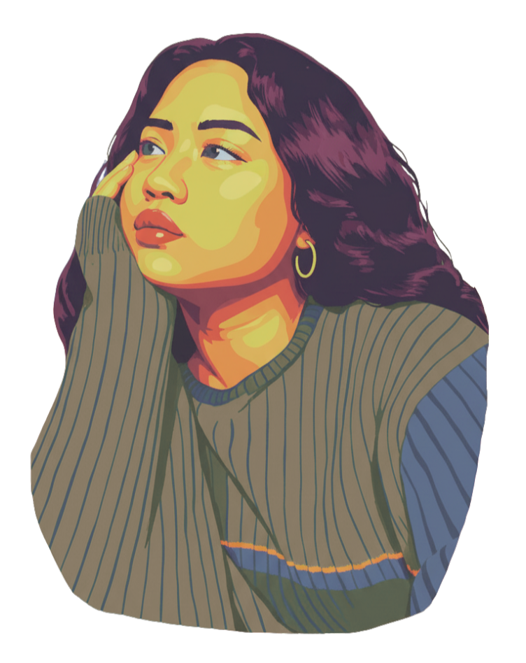

Based in Saint Paul, Minnesota, I currently work as a Digital Media Designer for a local sports nonprofit, where I create and manage social media content that builds community engagement and connection. As an aspiring UX Designer, I’m passionate about creating thoughtful, user-centered digital experiences that blend creativity with functionality. My background in photography, videography, and graphic design has shaped my approach to visual storytelling and strengthened my eye for intuitive, engaging design. As I continue developing my skills in JavaScript, HTML, and CSS, I’m especially drawn to the intersection of design and development, using both to craft meaningful and impactful user experiences.